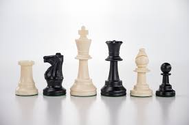

Every chess piece has its own movement pattern and purpose. Learning how each piece moves is one of the first steps toward becoming a confident chess player. Beginners should focus on understanding the value of each piece and how pieces work together during a game.
Return to Project Checkmate homepage
For additional information about chess pieces and their movement, visit ChessKid Learning Center .